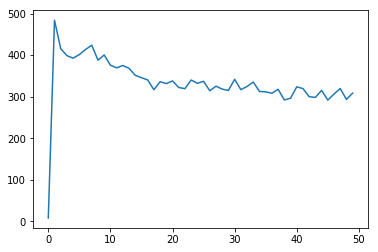

PyTorch Tutorial RNN 2¶
- date
22 oct 2019
from io import open;import re;import unicodedata
import numpy as np;import random
class Language:
def __init__(self):
self.word2index={}; self.word2count={}
self.index2word={0:"SOS",1:"EOS"};self.nWords=2
def addSentence(self,sentence):
for word in sentence.split(' '):
if word not in self.word2index:
self.word2index[word]=self.nWords
self.word2count[word]=1
self.index2word[self.nWords]=word
self.nWords+=1
else:
self.word2count[word]+=1
class GetTranslation:
def __init__(self,file,maxLen=10):
self.maxLen=maxLen
lines=open(file,encoding='utf-8').read().strip().split('\n')
pairs=[[self.normalizeString(s) for s in line.split('\t')]
for line in lines]
self.lang1=Language(); self.lang2=Language()
self.pairs=self.filterPairs(pairs);print("len(pairs)=",len(pairs))
for pair in self.pairs:
self.lang1.addSentence(pair[0])
self.lang2.addSentence(pair[1])
print("lang1",self.lang1.nWords);print("lang2",self.lang2.nWords)
def normalizeString(self,s):
s=self.unicodeToAscii(s.lower().strip())
s=re.sub(r"([.!?])",r" \1",s);s=re.sub(r"[^a-zA-Z.!?]+",r" ",s)
return s
def unicodeToAscii(self,s):
return ''.join(c for c in unicodedata.normalize('NFD',s)
if unicodedata.category(c)!='Mn')
def filterPairs(self,pairs):
return [pair for pair in pairs if self.keepPair(pair)]
def keepPair(self,pair):
englishPrefixes = ("i am ", "i m ","he is", "he s ",
"she is", "she s ","you are", "you re ",
"we are", "we re ","they are", "they re ")
return len(pair[0].split(' '))<self.maxLen\
and len(pair[1].split(' '))<self.maxLen\
and pair[0].startswith(englishPrefixes)
def samplePair(self):
pair=random.choice(self.pairs)
#print("pair",pair)
inputSeq=self.sentenceToSeq(self.lang1,pair[0])
targetSeq=self.sentenceToSeq(self.lang2,pair[1])
return inputSeq,targetSeq
def sentenceToSeq(self,language,sentence):
seq=[language.word2index[word] for word in sentence.split(' ')]
seq.append(1) # "EOS = 1"
return seq
getTranslation=GetTranslation('eng-fra.txt')
getTranslation.samplePair()
len(pairs)= 135842
lang1 2803
lang2 4345
([129, 124, 713, 606, 695, 4, 1], [210, 925, 1328, 115, 528, 2744, 5, 1])
import torch; import torch.nn as nn; from torch import optim
import torch.nn.functional as F
import matplotlib.pyplot as plt
class EncoderRNN(nn.Module):
def __init__(self,inputSize,hiddenSize):
super(EncoderRNN,self).__init__()
self.hiddenSize=hiddenSize
self.embedding=nn.Embedding(inputSize,hiddenSize)
self.gru=nn.GRU(input_size=hiddenSize,hidden_size=hiddenSize)
def forward(self,input,hidden):
embedded=self.embedding(input).view([1,1,-1])
return self.gru(embedded,hidden) # output, hidden
def initHidden(self):
return torch.zeros(1,1,self.hiddenSize,device=device)
"""
class DecoderRNN(nn.Module):
def __init__(self,hiddenSize,outputSize):
super(DecoderRNN,self).__init__()
self.hiddenSize=hiddenSize
self.embedding=nn.Embedding(outputSize,hiddenSize)
self.gru=nn.GRU(input_size=hiddenSize,hidden_size=hiddenSize)
self.outLinear=nn.Linear(hiddenSize,outputSize)
self.softmax=nn.LogSoftmax(dim=1)
def forward(self,input,hidden):
embedded=F.relu(self.embedding(input).view(1,1,-1))
output,hidden=self.gru(embeded,hidden)
output=self.softmax(self.outLinear(output[0]))
return output,hidden
def initHidden(self):
return torch.zeros(1,1,self.hiddenSize,device=device)
"""
class AttentionDecoder(nn.Module):
def __init__(self,hiddenSize,outputSize,dropoutProb,maxLen):
super(AttentionDecoder,self).__init__()
self.hiddenSize=hiddenSize
self.embedding=nn.Embedding(outputSize,hiddenSize)
self.attention=nn.Linear(hiddenSize*2,maxLen)
self.attentionCombine=nn.Linear(hiddenSize*2,hiddenSize)
self.dropout=nn.Dropout(dropoutProb)
self.gru=nn.GRU(input_size=hiddenSize,hidden_size=hiddenSize)
self.outLinear=nn.Linear(hiddenSize,outputSize)
def forward(self,input,hidden,encoderOutputs):
embedded=self.dropout(self.embedding(input).view(1,1,-1))
# see graph
attentionWeights=F.softmax(
self.attention(
torch.cat((embedded[0],hidden[0]),dim=1)
),dim=1
)
attentionApplied=torch.bmm(attentionWeights.unsqueeze(0),
encoderOutputs.unsqueeze(0))
output=torch.cat((embedded[0],attentionApplied[0]),1)
output=F.relu(self.attentionCombine(output).unsqueeze(0))
output,hidden=self.gru(output,hidden)
output=F.log_softmax(self.outLinear(output[0]),dim=1)
return output,hidden,attentionWeights
def initHidden(self):
return torch.zeros([1,1,self.hiddenSize],device=device)
class Agent:
def __init__(self,maxLen=10,hiddenSize=256,
teacherForcingProb=0.5,filename='eng-fra.txt',
dropoutProb=0.01,learnRate=1e-2):
self.maxLen=maxLen; self.hiddenSize=hiddenSize
self.teacherForcingProb=teacherForcingProb
self.getTranslation=GetTranslation(filename,maxLen)
lang1nWords=self.getTranslation.lang1.nWords
lang2nWords=self.getTranslation.lang2.nWords
self.encoder=EncoderRNN(lang1nWords,hiddenSize).to(device)
self.encoderOptimizer=optim.SGD(self.encoder.parameters(),
lr=learnRate)
self.decoder=AttentionDecoder(hiddenSize,lang2nWords,
dropoutProb,maxLen).to(device)
self.decoderOptimizer=optim.SGD(self.decoder.parameters(),
lr=learnRate)
self.criterion=nn.NLLLoss()
def train(self,nIterations):
self.losses=[];lossTotal=0
for iter in range(nIterations):
pair=self.getTranslation.samplePair()
inputTensor=torch.tensor(pair[0],dtype=torch.long,device=device).view(-1, 1)
targetTensor=torch.tensor(pair[1],dtype=torch.long,device=device).view(-1, 1)
loss=self.trainOne(inputTensor,targetTensor)
lossTotal+=loss
if iter%100==0:
self.losses.append(lossTotal)
print("lossTotal:",lossTotal);lossTotal=0
plt.plot(self.losses);plt.show()
def trainOne(self,inputTensor,targetTensor):
encoderHidden=self.encoder.initHidden()
self.encoderOptimizer.zero_grad();self.decoderOptimizer.zero_grad()
inputLen=inputTensor.size(0); targetLen=targetTensor.size(0)
encoderOutputs=torch.zeros([self.maxLen,self.hiddenSize],device=device)
loss=0
for i in range(inputLen):
encoderOutput,encoderHidden=self.encoder(
inputTensor[i],encoderHidden)
encoderOutputs[i]=encoderOutput[0,0]
decoderInput=torch.tensor([[0]],device=device) # "SOS = 0"
decoderHidden=encoderHidden
useTeacherForcing=True if random.random()<self.teacherForcingProb else False
if useTeacherForcing: # target as next input
for i in range(targetLen):
decoderOutput,decoderHidden,decoderAttention=self.decoder(
decoderInput,decoderHidden,encoderOutputs)
loss+=self.criterion(decoderOutput,targetTensor[i])
decoderInput=targetTensor[i]
else: # prediction as next input
for i in range(targetLen):
decoderOutput,decoderHidden,decoderAttention=self.decoder(
decoderInput,decoderHidden,encoderOutputs)
topValue,topIndex=decoderOutput.topk(1)
decoderInput=topIndex.squeeze().detach() # detach from graph, just an input
loss+=self.criterion(decoderOutput,targetTensor[i])
if decoderInput.item()==1: break # "EOS = 1"
loss.backward();
self.encoderOptimizer.step();self.decoderOptimizer.step()
return loss.item()/targetLen
device = torch.device("cuda" if torch.cuda.is_available() else "cpu")
agent=Agent()
agent.train(5000)
len(pairs)= 135842
lang1 2803
lang2 4345
lossTotal: 8.382897271050346
lossTotal: 484.00090956952846
lossTotal: 415.5288609262497
lossTotal: 398.90406545078946
lossTotal: 392.74038437283235
lossTotal: 401.41351437265905
lossTotal: 413.63684746575706
lossTotal: 423.95259078987056
lossTotal: 387.9253147038201
lossTotal: 400.4369891666231
lossTotal: 375.9564390962088
lossTotal: 369.40357372420175
lossTotal: 375.159505275696
lossTotal: 368.3363914232405
lossTotal: 351.4931094124203
lossTotal: 345.763414468084
lossTotal: 340.3649337579335
lossTotal: 316.76592836039407
lossTotal: 336.15329839994024
lossTotal: 331.5485665635458
lossTotal: 338.0610604653282
lossTotal: 322.1913966966053
lossTotal: 319.4010247374338
lossTotal: 340.254363073243
lossTotal: 332.29101278441306
lossTotal: 337.0906412942068
lossTotal: 314.36265838524656
lossTotal: 325.3588539819868
lossTotal: 318.25481532036326
lossTotal: 315.2033801824328
lossTotal: 341.89669475025596
lossTotal: 317.06151219171187
lossTotal: 324.6426379143246
lossTotal: 335.2526238774497
lossTotal: 312.68326999043666
lossTotal: 311.76144389992675
lossTotal: 308.2723661736837
lossTotal: 317.88990014621186
lossTotal: 292.26333829259113
lossTotal: 296.26249667103343
lossTotal: 323.83813181585725
lossTotal: 319.55471047219766
lossTotal: 300.0589878778609
lossTotal: 298.32901718692165
lossTotal: 315.3292742059345
lossTotal: 291.8655293184614
lossTotal: 306.4530454408553
lossTotal: 319.7169124440542
lossTotal: 293.4895835475317
lossTotal: 308.7035841949402
